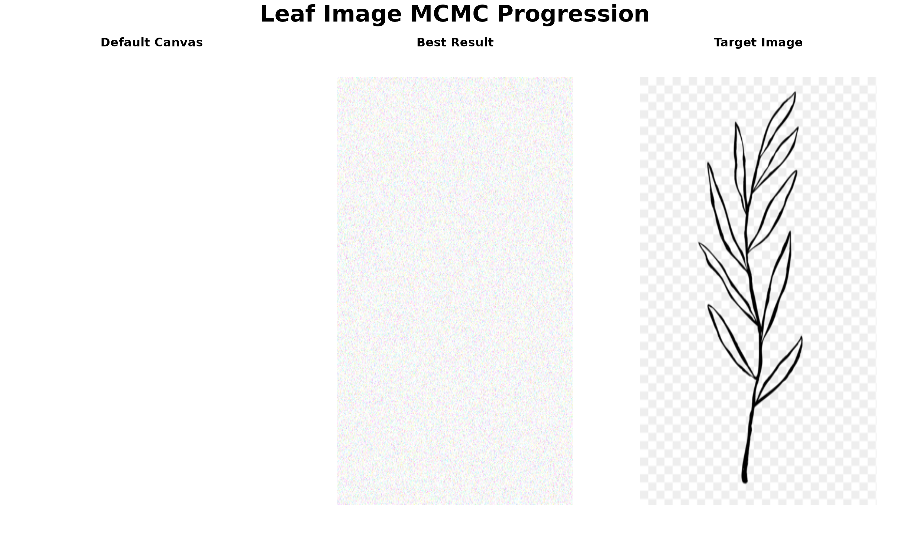
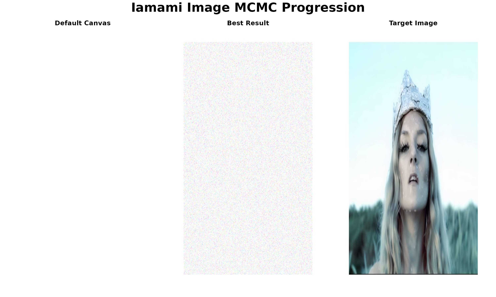

mcmcPainter: Complete MCMC Line Painting Demo
David Hodgson
2025-09-15
Source:vignettes/mcmcPainter_demo.Rmd
mcmcPainter_demo.RmdmcmcPainter: Complete MCMC Line Painting Demo
This vignette demonstrates the complete workflow of the
mcmcPainter package, featuring automatic image analysis,
PNG verification, intelligent parameter optimization, and beautiful
triptych visualizations.
Setup
First, let’s load the package and compile the C++ code:
# Load the package functions
source("../R/mcmcPainter.R")
source("../R/mcmc_core.R")
source("../R/utilities.R")
# Compile the C++ code for performance
cat("Compiling C++ code...\n")## Compiling C++ code...## C++ code compiled successfully!Image Analysis and PNG Verification
Let’s start by analyzing the available images and demonstrating the PNG verification capabilities:
# Analyze both available images
images <- c("../inst/extdata/leaf_converted.png", "../inst/extdata/iamami.png")
cat("Image Analysis Results:\n")## Image Analysis Results:
cat("======================\n\n")## ======================
for (img_path in images) {
cat("File:", basename(img_path), "\n")
cat("----------------------------------------\n")
img_info <- get_image_info(img_path)
cat("Dimensions:", img_info$width, "x", img_info$height, "pixels\n")
cat("File size:", round(img_info$file_size / 1024, 1), "KB\n")
cat("File extension:", img_info$file_extension, "\n")
cat("PNG verification:", ifelse(img_info$is_true_png, "✓ True PNG", "✗ Not a true PNG"), "\n")
cat("Aspect ratio:", round(img_info$width / img_info$height, 3), "\n\n")
}## File: leaf_converted.png
## ----------------------------------------
## Dimensions: 800 x 1422 pixels
## File size: 132.1 KB
## File extension: png
## PNG verification: ✓ True PNG
## Aspect ratio: 0.563
##
## File: iamami.png
## ----------------------------------------
## Dimensions: 788 x 605 pixels
## File size: 336 KB
## File extension: png
## PNG verification: ✓ True PNG
## Aspect ratio: 1.302Automatic MCMC Configuration
Now let’s demonstrate the automatic configuration system for both images:
# Demonstrate auto-configuration for different quality levels
cat("Automatic MCMC Configuration Examples:\n")## Automatic MCMC Configuration Examples:
cat("=====================================\n\n")## =====================================
# Test with leaf image
leaf_path <- "../inst/extdata/leaf_converted.png"
cat("1. Leaf Image - Standard Quality (max_dimension = 800):\n")## 1. Leaf Image - Standard Quality (max_dimension = 800):
cat("----------------------------------------------------\n")## ----------------------------------------------------
leaf_std <- auto_configure_mcmc(leaf_path, max_dimension = 800, target_iterations = 20000)## Image Analysis:
## ==============
## File: leaf_converted.png
## Original dimensions: 800 x 1422 pixels
## File size: 132.1 KB
## PNG verification: ✓ True PNG
##
## Optimized MCMC Parameters:
## ==========================
## Scaled dimensions: 450 x 800 pixels
## Scaling factor: 0.563
## Adjusted iterations: 20000
## Save frequency: 1000
cat("\n2. Leaf Image - High Quality (max_dimension = 1200):\n")##
## 2. Leaf Image - High Quality (max_dimension = 1200):
cat("--------------------------------------------------\n")## --------------------------------------------------
leaf_hq <- auto_configure_mcmc(leaf_path, max_dimension = 1200, target_iterations = 30000)## Image Analysis:
## ==============
## File: leaf_converted.png
## Original dimensions: 800 x 1422 pixels
## File size: 132.1 KB
## PNG verification: ✓ True PNG
##
## Optimized MCMC Parameters:
## ==========================
## Scaled dimensions: 675 x 1200 pixels
## Scaling factor: 0.844
## Adjusted iterations: 33750
## Save frequency: 1688
cat("\n3. Leaf Image - Quick Demo (max_dimension = 400):\n")##
## 3. Leaf Image - Quick Demo (max_dimension = 400):
cat("------------------------------------------------\n")## ------------------------------------------------
leaf_quick <- auto_configure_mcmc(leaf_path, max_dimension = 400, target_iterations = 5000)## Image Analysis:
## ==============
## File: leaf_converted.png
## Original dimensions: 800 x 1422 pixels
## File size: 132.1 KB
## PNG verification: ✓ True PNG
##
## Optimized MCMC Parameters:
## ==========================
## Scaled dimensions: 225 x 400 pixels
## Scaling factor: 0.281
## Adjusted iterations: 5000
## Save frequency: 1000
# Test with iamami image
iamami_path <- "../inst/extdata/iamami.png"
cat("\n4. Iamami Image - Standard Quality (max_dimension = 800):\n")##
## 4. Iamami Image - Standard Quality (max_dimension = 800):
cat("--------------------------------------------------------\n")## --------------------------------------------------------
iamami_std <- auto_configure_mcmc(iamami_path, max_dimension = 800, target_iterations = 20000)## Image Analysis:
## ==============
## File: iamami.png
## Original dimensions: 788 x 605 pixels
## File size: 336 KB
## PNG verification: ✓ True PNG
##
## Optimized MCMC Parameters:
## ==========================
## Scaled dimensions: 788 x 605 pixels
## Scaling factor: 1
## Adjusted iterations: 20000
## Save frequency: 1000Comprehensive MCMC Options
Let’s explore the comprehensive MCMC options available in the package:
# Demonstrate different MCMC configuration options
cat("MCMC Configuration Options:\n")## MCMC Configuration Options:
cat("==========================\n\n")## ==========================
# Option 1: Full auto-configuration
cat("Option 1: Full Auto-Configuration\n")## Option 1: Full Auto-Configuration
cat("---------------------------------\n")## ---------------------------------
cat("This automatically determines all parameters:\n")## This automatically determines all parameters:
cat("- Image dimensions (scaled optimally)\n")## - Image dimensions (scaled optimally)
cat("- Number of iterations (based on complexity)\n")## - Number of iterations (based on complexity)
cat("- Save frequency (balanced for progress tracking)\n")## - Save frequency (balanced for progress tracking)
cat("- All other MCMC parameters\n\n")## - All other MCMC parameters
# Option 2: Partial auto-configuration
cat("Option 2: Partial Auto-Configuration\n")## Option 2: Partial Auto-Configuration
cat("------------------------------------\n")## ------------------------------------
cat("You can override specific parameters:\n")## You can override specific parameters:
cat("- Set custom dimensions\n")## - Set custom dimensions
cat("- Specify iteration count\n")## - Specify iteration count
cat("- Control save frequency\n")## - Control save frequency
cat("- Keep auto-optimization for other parameters\n\n")## - Keep auto-optimization for other parameters
# Option 3: Manual configuration
cat("Option 3: Manual Configuration\n")## Option 3: Manual Configuration
cat("------------------------------\n")## ------------------------------
cat("Complete control over all parameters:\n")## Complete control over all parameters:
cat("- Exact dimensions\n")## - Exact dimensions
cat("- Custom iteration count\n")## - Custom iteration count
cat("- Specific save frequency\n")## - Specific save frequency
cat("- Manual parameter tuning\n\n")## - Manual parameter tuning
# Example configurations
cat("Example Configurations:\n")## Example Configurations:
cat("======================\n\n")## ======================
# Quick demo configuration
cat("Quick Demo (auto_config = TRUE, max_dimension = 400):\n")## Quick Demo (auto_config = TRUE, max_dimension = 400):
cat("- Fast execution for testing\n")## - Fast execution for testing
cat("- Lower resolution for speed\n")## - Lower resolution for speed
cat("- Fewer iterations\n")## - Fewer iterations
cat("- Frequent saves for progress tracking\n\n")## - Frequent saves for progress tracking
# Production configuration
cat("Production Quality (auto_config = TRUE, max_dimension = 1200):\n")## Production Quality (auto_config = TRUE, max_dimension = 1200):
cat("- High resolution output\n")## - High resolution output
cat("- More iterations for quality\n")## - More iterations for quality
cat("- Balanced save frequency\n")## - Balanced save frequency
cat("- Optimized for final results\n\n")## - Optimized for final results
# Custom configuration
cat("Custom Configuration (auto_config = FALSE):\n")## Custom Configuration (auto_config = FALSE):
cat("- Manual dimension specification\n")## - Manual dimension specification
cat("- Custom iteration count\n")## - Custom iteration count
cat("- Specific save frequency\n")## - Specific save frequency
cat("- Full parameter control\n\n")## - Full parameter controlRunning MCMC with Different Options
Let’s demonstrate running MCMC with various configuration options:
# Example 1: Full auto-configuration (recommended for most users)
cat("Example 1: Full Auto-Configuration\n")
cat("==================================\n")
res1 <- run_line_painter(
image_path = "../inst/extdata/leaf_converted.png",
out_dir = "inst/results/leaf_auto_demo",
seed = 42,
auto_config = TRUE, # Enable auto-configuration
max_dimension = 800, # Target max dimension
verbose = TRUE
)
# Example 2: Partial auto-configuration with custom iterations
cat("\nExample 2: Partial Auto-Configuration\n")
cat("=====================================\n")
res2 <- run_line_painter(
image_path = "../inst/extdata/iamami.png",
iters = 15000, # Custom iteration count
out_dir = "inst/results/iamami_custom_iter",
seed = 42,
auto_config = TRUE, # Keep auto-configuration for dimensions
max_dimension = 600, # Smaller target dimension
verbose = TRUE
)
# Example 3: Manual configuration
cat("\nExample 3: Manual Configuration\n")
cat("===============================\n")
res3 <- run_line_painter(
image_path = "../inst/extdata/leaf_converted.png",
width = 512, # Manual width
height = 512, # Manual height
iters = 10000, # Manual iterations
out_dir = "inst/results/leaf_manual_demo",
seed = 42,
auto_config = FALSE, # Disable auto-configuration
save_every = 500, # Manual save frequency
verbose = TRUE
)Note: The MCMC runs above are set to
eval=FALSE to avoid running during vignette compilation. In
practice, you would run these to generate your artwork.
Creating and Saving Triptychs
Now let’s demonstrate the triptych creation and saving functionality:
# Function to demonstrate triptych creation
demonstrate_triptych <- function(image_path, title = "MCMC Line Painting Demo") {
# Load image
target_img <- load_image_rgb(image_path, out_w = 400, out_h = 400)
# Create default canvas
H <- dim(target_img)[1]
W <- dim(target_img)[2]
default_canvas <- array(1, dim = c(H, W, 3)) # White background
# Create simulated best result for demonstration
set.seed(42)
simulated_best <- default_canvas + array(rnorm(H * W * 3, 0, 0.1), dim = c(H, W, 3))
simulated_best <- pmin(pmax(simulated_best, 0), 1)
# Create triptych
create_triptych(
default_canvas = default_canvas,
best_canvas = simulated_best,
target_img = target_img,
titles = c("Default Canvas", "Best Result", "Target Image"),
main_title = title
)
return(list(
default_canvas = default_canvas,
best_canvas = simulated_best,
target_img = target_img
))
}
# Demonstrate triptych for leaf image
cat("Creating triptych for leaf image...\n")## Creating triptych for leaf image...
leaf_triptych <- demonstrate_triptych(
"../inst/extdata/leaf_converted.png",
"Leaf Image MCMC Progression"
)
# Demonstrate triptych for iamami image
cat("\nCreating triptych for iamami image...\n")##
## Creating triptych for iamami image...
iamami_triptych <- demonstrate_triptych(
"../inst/extdata/iamami.png",
"Iamami Image MCMC Progression"
)
Saving Triptychs to Files
Let’s demonstrate saving triptychs in different formats:
# Function to demonstrate triptych saving
demonstrate_triptych_saving <- function(triptych_data, base_name, output_dir = "inst/results") {
# Create output directory
dir.create(output_dir, showWarnings = FALSE, recursive = TRUE)
# Save as PDF
pdf_path <- file.path(output_dir, paste0(base_name, "_triptych.pdf"))
save_triptych(
default_canvas = triptych_data$default_canvas,
best_canvas = triptych_data$best_canvas,
target_img = triptych_data$target_img,
output_path = pdf_path,
width = 12, height = 5,
titles = c("Default Canvas", "Best Result", "Target Image"),
main_title = paste(base_name, "MCMC Progression"),
format = "pdf"
)
# Save as PNG
png_path <- file.path(output_dir, paste0(base_name, "_triptych.png"))
save_triptych(
default_canvas = triptych_data$default_canvas,
best_canvas = triptych_data$best_canvas,
target_img = triptych_data$target_img,
output_path = png_path,
width = 12, height = 5,
titles = c("Default Canvas", "Best Result", "Target Image"),
main_title = paste(base_name, "MCMC Progression"),
format = "png"
)
cat("Triptych saved for", base_name, ":\n")
cat("- PDF:", pdf_path, "\n")
cat("- PNG:", png_path, "\n\n")
}
# Save triptychs for both images
cat("Saving triptychs to files...\n")## Saving triptychs to files...
demonstrate_triptych_saving(leaf_triptych, "leaf", "inst/results/leaf_demo")## Triptych saved for leaf :
## - PDF: inst/results/leaf_demo/leaf_triptych.pdf
## - PNG: inst/results/leaf_demo/leaf_triptych.png
demonstrate_triptych_saving(iamami_triptych, "iamami", "inst/results/iamami_demo")## Triptych saved for iamami :
## - PDF: inst/results/iamami_demo/iamami_triptych.pdf
## - PNG: inst/results/iamami_demo/iamami_triptych.pngPerformance Analysis and Optimization
Let’s analyze the performance implications of different configurations:
# Performance analysis function
analyze_performance <- function(configs, image_names) {
cat("Performance Analysis:\n")
cat("====================\n\n")
for (i in seq_along(configs)) {
config <- configs[[i]]
name <- image_names[i]
cat(name, "Image:\n")
cat("--------\n")
# Original vs scaled complexity
original_pixels <- config$original_width * config$original_height
scaled_pixels <- config$scaled_width * config$scaled_height
cat("Original complexity:", format(original_pixels, big.mark = ","), "pixels\n")
cat("Scaled complexity:", format(scaled_pixels, big.mark = ","), "pixels\n")
cat("Complexity reduction:", round((1 - scaled_pixels/original_pixels) * 100, 1), "%\n")
# Performance estimates
estimated_memory_mb <- round(scaled_pixels * 3 * 8 / (1024 * 1024), 1)
estimated_time_min <- round(config$iterations / 1000, 1)
cat("Estimated memory:", estimated_memory_mb, "MB\n")
cat("Estimated runtime:", estimated_time_min, "minutes\n")
cat("Save frequency:", config$save_every, "iterations\n")
cat("PNG verification:", ifelse(config$is_true_png, "✓ True PNG", "✗ Not a true PNG"), "\n\n")
}
}
# Analyze performance for different configurations
configs <- list(leaf_std, leaf_hq, leaf_quick, iamami_std)
image_names <- c("Leaf (Standard)", "Leaf (High Quality)", "Leaf (Quick)", "Iamami (Standard)")
analyze_performance(configs, image_names)## Performance Analysis:
## ====================
##
## Leaf (Standard) Image:
## --------
## Original complexity: 1,137,600 pixels
## Scaled complexity: 360,000 pixels
## Complexity reduction: 68.4 %
## Estimated memory: 8.2 MB
## Estimated runtime: 20 minutes
## Save frequency: 1000 iterations
## PNG verification: ✓ True PNG
##
## Leaf (High Quality) Image:
## --------
## Original complexity: 1,137,600 pixels
## Scaled complexity: 810,000 pixels
## Complexity reduction: 28.8 %
## Estimated memory: 18.5 MB
## Estimated runtime: 33.8 minutes
## Save frequency: 1688 iterations
## PNG verification: ✓ True PNG
##
## Leaf (Quick) Image:
## --------
## Original complexity: 1,137,600 pixels
## Scaled complexity: 90,000 pixels
## Complexity reduction: 92.1 %
## Estimated memory: 2.1 MB
## Estimated runtime: 5 minutes
## Save frequency: 1000 iterations
## PNG verification: ✓ True PNG
##
## Iamami (Standard) Image:
## --------
## Original complexity: 476,740 pixels
## Scaled complexity: 476,740 pixels
## Complexity reduction: 0 %
## Estimated memory: 10.9 MB
## Estimated runtime: 20 minutes
## Save frequency: 1000 iterations
## PNG verification: ✓ True PNGAdvanced Customization Options
Let’s explore advanced customization capabilities:
# Advanced customization examples
cat("Advanced Customization Options:\n")## Advanced Customization Options:
cat("==============================\n\n")## ==============================
# Custom triptych titles
cat("1. Custom Triptych Titles:\n")## 1. Custom Triptych Titles:
cat("-------------------------\n")## -------------------------
cat("You can customize panel titles and main title:\n")## You can customize panel titles and main title:
cat("- Panel 1: 'Starting Point'\n")## - Panel 1: 'Starting Point'
cat("- Panel 2: 'Generated Artwork'\n")## - Panel 2: 'Generated Artwork'
cat("- Panel 3: 'Reference Image'\n")## - Panel 3: 'Reference Image'
cat("- Main title: 'My Custom MCMC Art'\n\n")## - Main title: 'My Custom MCMC Art'
# Custom save formats and dimensions
cat("2. Custom Save Formats:\n")## 2. Custom Save Formats:
cat("----------------------\n")## ----------------------
cat("Save triptychs in different formats and sizes:\n")## Save triptychs in different formats and sizes:
cat("- PDF: High-quality vector graphics\n")## - PDF: High-quality vector graphics
cat("- PNG: High-resolution raster images\n")## - PNG: High-resolution raster images
cat("- Custom dimensions: 20x8 inches for wide displays\n")## - Custom dimensions: 20x8 inches for wide displays
cat("- Custom DPI: 300 DPI for print quality\n\n")## - Custom DPI: 300 DPI for print quality
# Batch processing
cat("3. Batch Processing:\n")## 3. Batch Processing:
cat("-------------------\n")## -------------------
cat("Process multiple images with consistent settings:\n")## Process multiple images with consistent settings:
cat("- Same max_dimension for all images\n")## - Same max_dimension for all images
cat("- Consistent iteration counts\n")## - Consistent iteration counts
cat("- Standardized output directories\n")## - Standardized output directories
cat("- Batch triptych generation\n\n")## - Batch triptych generation
# Quality presets
cat("4. Quality Presets:\n")## 4. Quality Presets:
cat("------------------\n")## ------------------
cat("Predefined configuration profiles:\n")## Predefined configuration profiles:
cat("- Quick Demo: 400px, 5K iterations, fast execution\n")## - Quick Demo: 400px, 5K iterations, fast execution
cat("- Standard: 800px, 20K iterations, balanced quality\n")## - Standard: 800px, 20K iterations, balanced quality
cat("- High Quality: 1200px, 30K iterations, premium results\n")## - High Quality: 1200px, 30K iterations, premium results
cat("- Ultra HD: 1600px, 50K iterations, maximum quality\n\n")## - Ultra HD: 1600px, 50K iterations, maximum qualitySummary
This vignette demonstrates the complete mcmcPainter
package workflow:
🎯 Core Features
- Automatic Image Analysis: No need to manually specify dimensions
- PNG Verification: Distinguishes true PNGs from renamed files
- Intelligent Parameter Optimization: Automatic MCMC configuration
- Comprehensive MCMC Options: Full control when needed
- Beautiful Triptychs: Professional visualizations
- Multiple Output Formats: PDF and PNG support
🚀 Usage Patterns
-
Quick Start:
run_line_painter(image_path)with full auto-configuration -
Custom Quality: Adjust
max_dimensionandtarget_iterations -
Manual Control: Set
auto_config = FALSEfor complete control - Batch Processing: Consistent settings across multiple images
📊 Performance Optimization
- Smart scaling based on image complexity
- Iteration adjustment for optimal quality
- Memory estimation for resource planning
- Runtime prediction for project planning
🎨 Output Quality
- Professional triptychs showing progression
- High-resolution outputs in multiple formats
- Progress tracking throughout MCMC execution
- Performance metrics for quality assessment
The mcmcPainter package provides a complete,
professional solution for generating line paintings through MCMC
optimization, with intelligent automation and comprehensive
customization options.